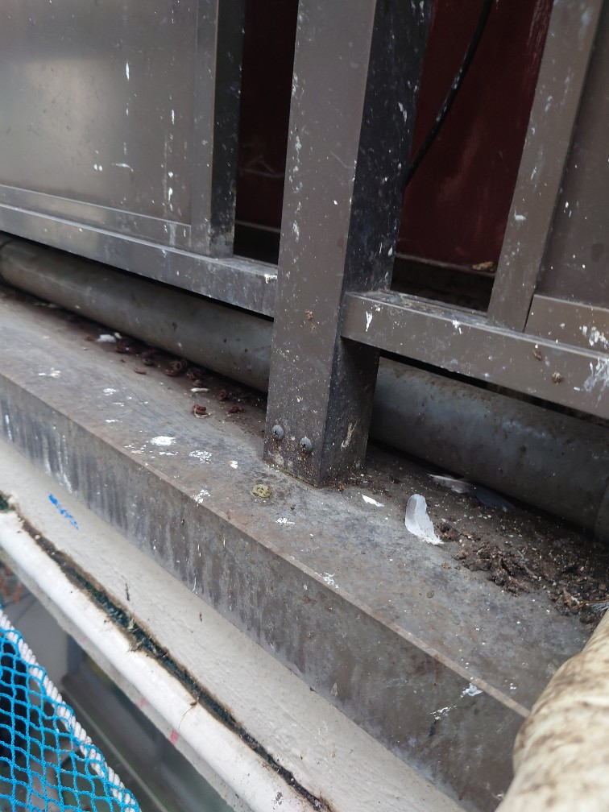
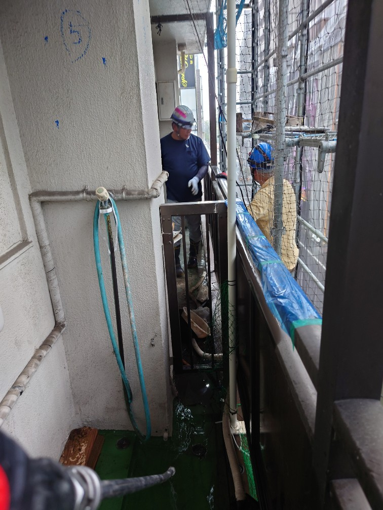
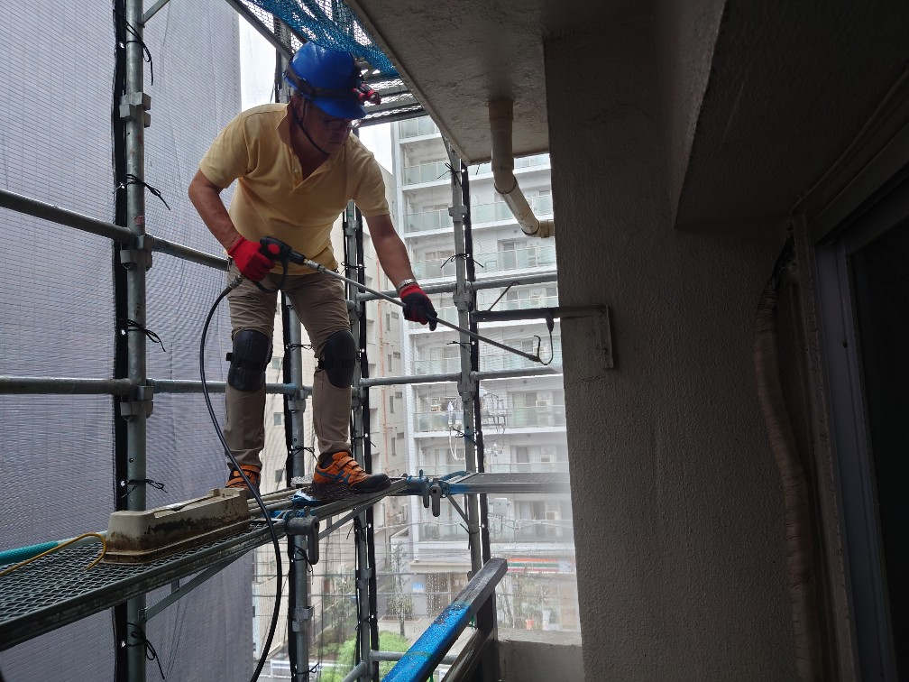
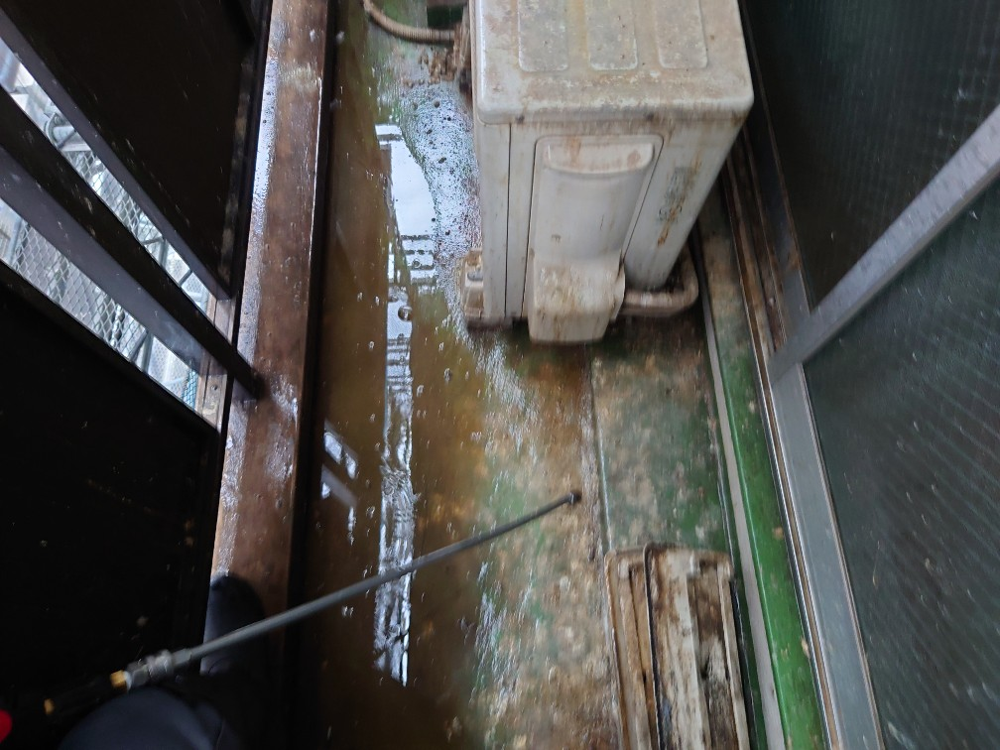
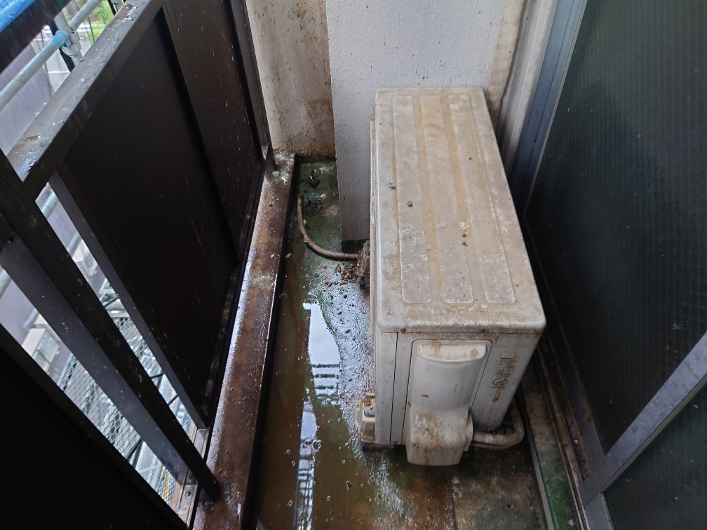
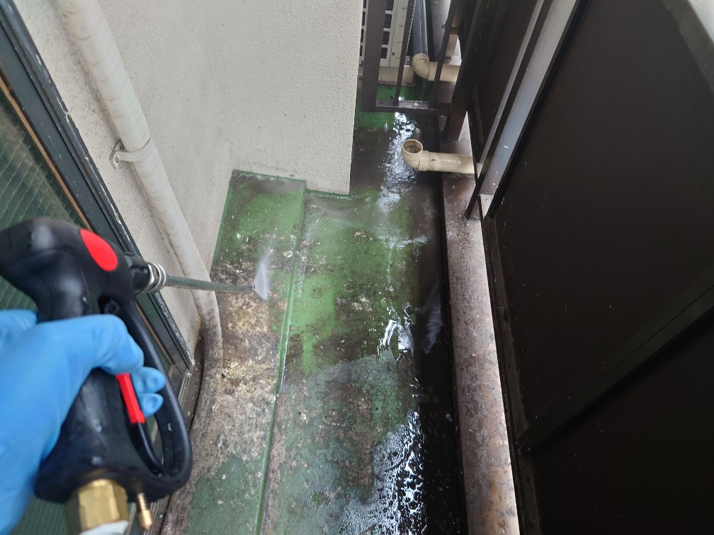
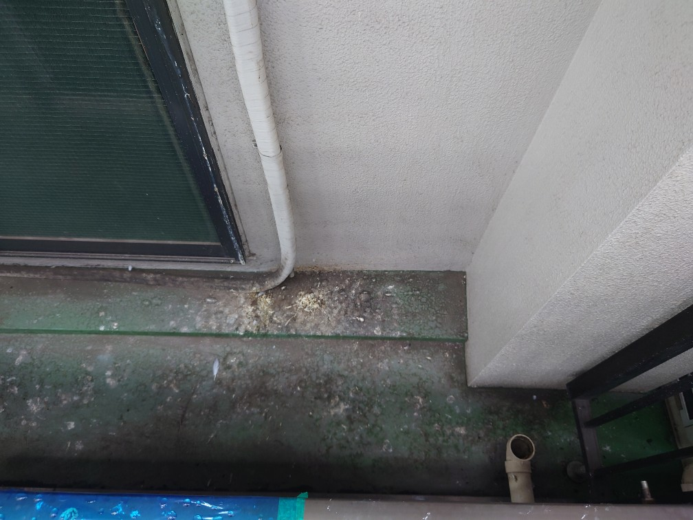
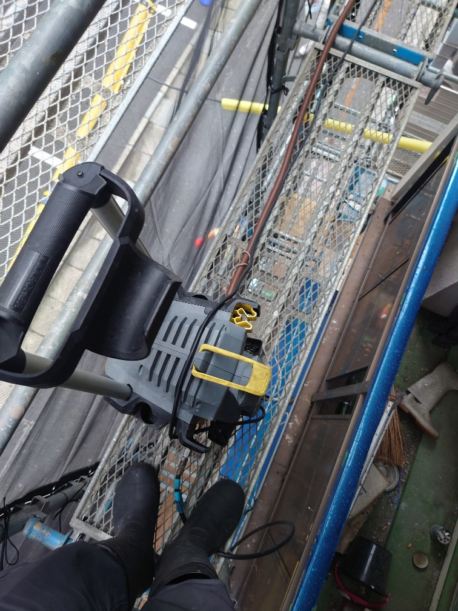
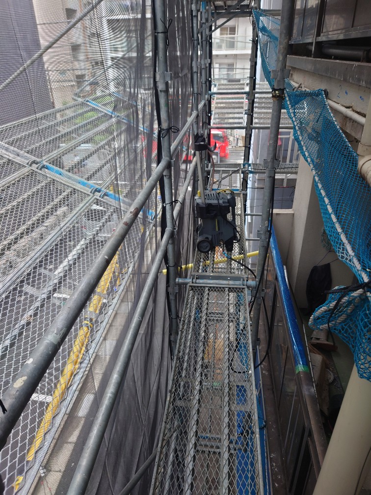

東京都江東区Kマンション様 ベランダの鳩のフン被害清掃クリーニングを実施しました。鳩の糞のクリーニング依頼とても多いです。
江東区のKマンション様のハトのフン被害清掃クリーニングを実施しました。ベランダの一面に鳩の糞が大量に堆積してしまっていて、マンションの外壁塗装が進まず、DAIZENメソッドでの高圧洗浄クリーニング依頼が来ました。足場の中を、縦横に高圧洗浄ケーブルを這わして、鳩の糞が堆積してしまった各室のベランダを洗浄クリーニングして綺麗にしました!








